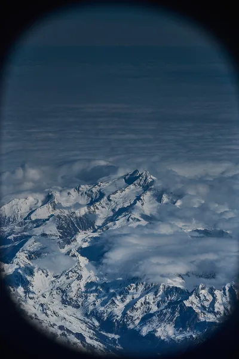
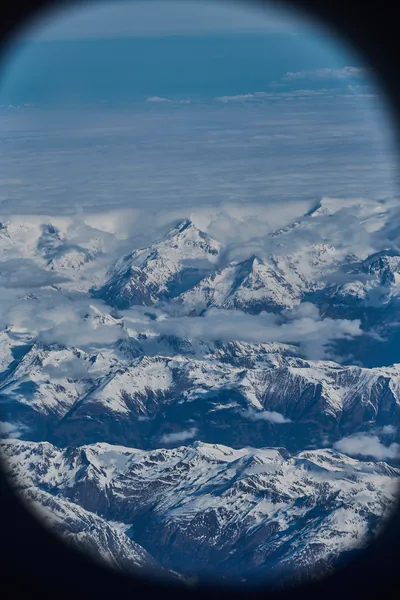
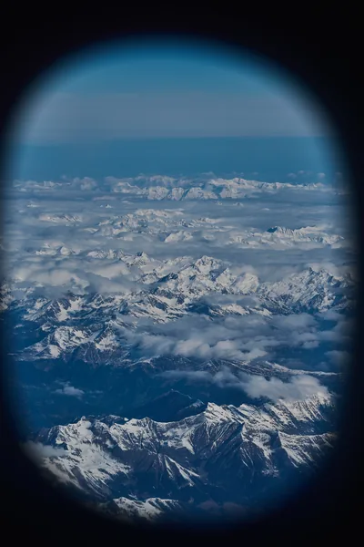
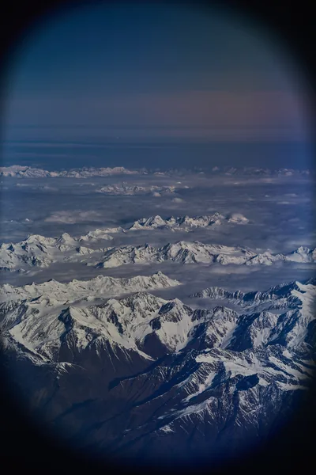
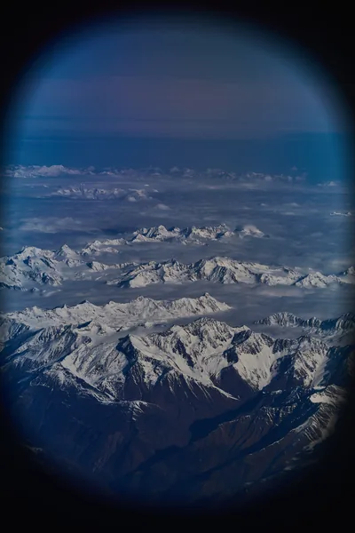
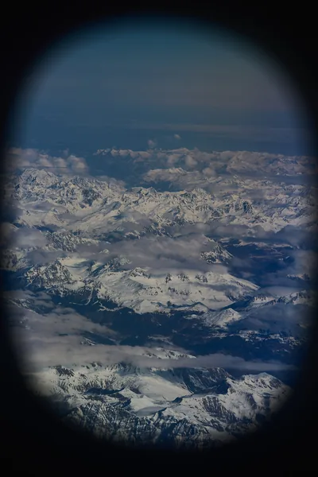
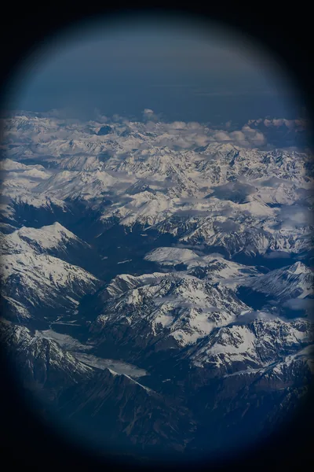
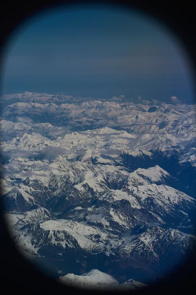
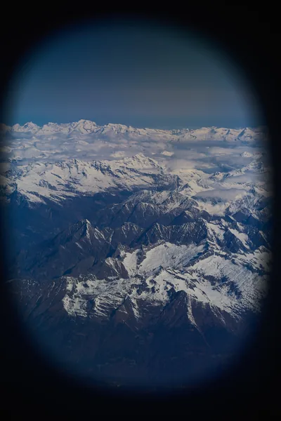

作品集 / from_plane
舷窗之外。
从飞机的窗口，重新看见山脉和云。
← 首页9 PHOTOGRAPHS


ISO 64 · 1/1000 秒 · f/8 · 120 mm

ISO 64 · 1/500 秒 · f/8 · 120 mm

ISO 64 · 1/1000 秒 · f/5.6 · 120 mm

ISO 64 · 1/1000 秒 · f/5.6 · 120 mm

ISO 64 · 1/1000 秒 · f/5.6 · 120 mm

ISO 64 · 1/1000 秒 · f/5.6 · 120 mm

ISO 64 · 1/320 秒 · f/5.6 · 120 mm

ISO 64 · 1/320 秒 · f/8 · 120 mm

ISO 64 · 1/250 秒 · f/5.6 · 120 mm